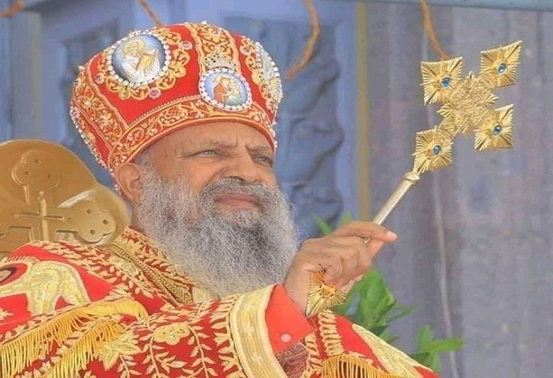
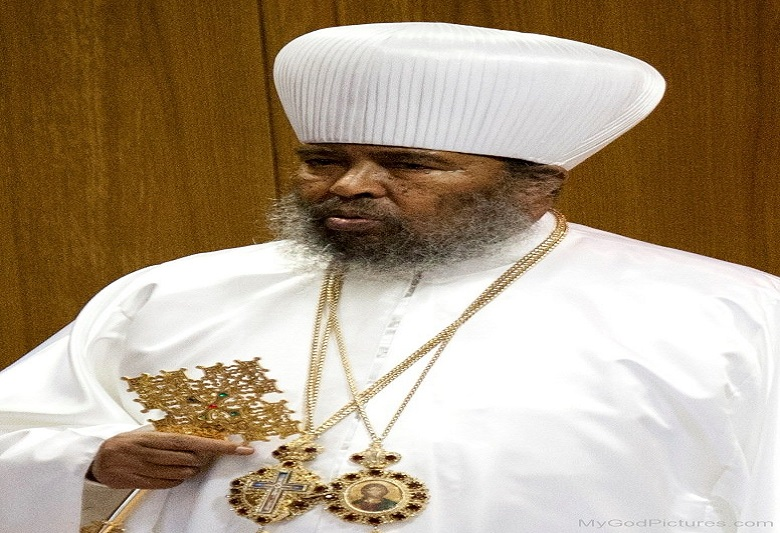
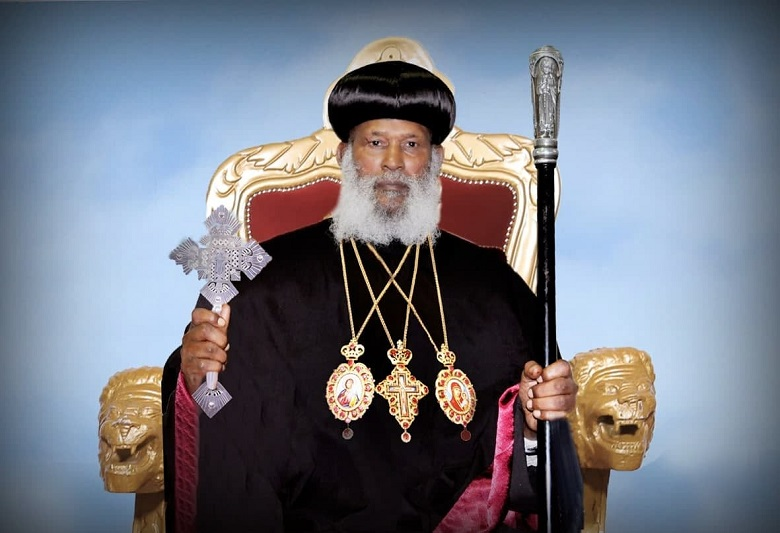
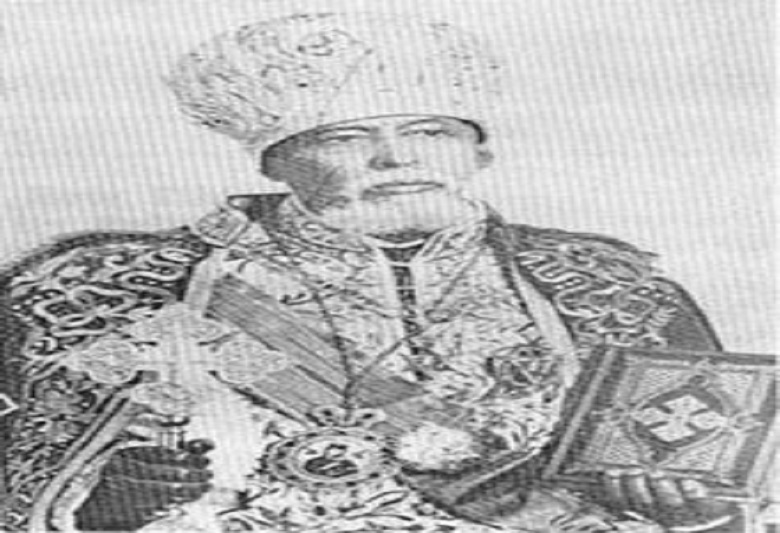

Church established by Jesus Christ and his apostles
Ethiopian orthodox tewahedo church
On the 22 January 2023, three individuals who were archbishops and members of the Holy
Synod of our Ethiopian Orthodox Tewahedo Church.
conducted an illegal and un-canonical installation of a group of 26 monks to the rank of episcopate against the teaching and practice of the Church, without
the knowledge of the Holy Synod and
the permission of His Holiness Abune Matthias I, Patriarch of Ethiopia, Archbishop of Axum and Echegue of the See of St. TekleHaymanot international.
conducted an illegal and un-canonical installation of a group of 26 monks to the rank of episcopate against the teaching and practice of the Church, without
the knowledge of the Holy Synod and
the permission of His Holiness Abune Matthias I, Patriarch of Ethiopia, Archbishop of Axum and Echegue of the See of St. TekleHaymanot international.
2022.05.17 ~ 18
@ @ Addis Ababa Ethiopia.
Main Program
Speech
Speech
Speech
Speech
Orthodox Church Synod.
Patriarch EOTC



